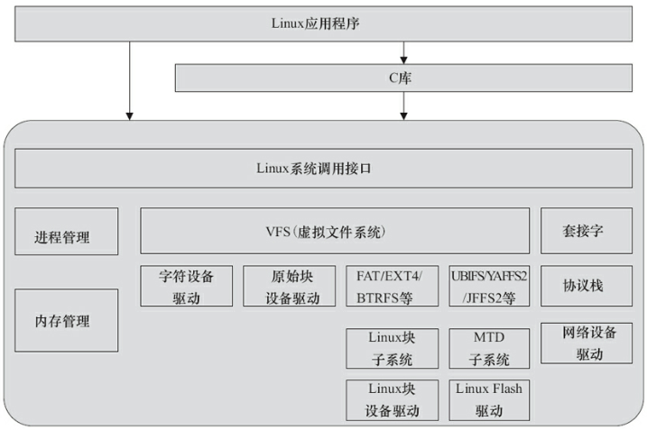
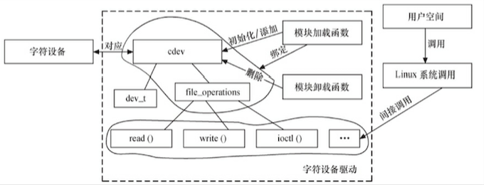

Linux 驱动开发
[TOC]
图形用户界面让简单的任务更容易完成， 而命令行界面使完成复杂的任务成为可能。
概念
Linux 设计中强调的一个基本观点是：机制和策略分离。因此，驱动应是对策略透明的。
| 功能 | 运行空间 | 特征 | 一般场景 | |
|---|---|---|---|---|
| 策略 | 处理如何使用这些能力 | 用户空间 | 灵活 | 应用 |
| 机制 | 解决提供什么能力 | 内核空间 | 相对稳定 | 驱动 |
设备驱动与整个软硬件系统的关系

Linux 用户空间的文件编程有两种方法，即通过 Linux API 和 通过 C 库函数访问文件。
驱动分类
- 字符设备：按键、键盘、触摸屏、USB、鼠标等
- 块设备：硬盘、eMMC等
- 网络接口：
驱动开发
流程
Linux 内核中增加程序需要完成以下3项工作：
- 将编写的源代码复制到 Linux 内核源代码的相应目录
- 在目录的 Kconfig 文件中增加关于新源代码对应项目的编译配置选项
- 在目录的 Makefile 文件中增加对新源代码的编译条目
工具
Shell
Shell是系统的用户界面，提供了用户与内核进行交互操作的一种接口。它接收用户输入的命令并把它送入内核去执行。
GCC
GCC（GNU Compiler Collection，GNU编译器套装），是一套由GNU开发的编程语言编译器。通过它可将源码编译成二进制文件。
启动引导程序
引导程序（bootloader），使系统启动、引导进内核。通常在一个 GNU/Linux 系统中选用 GNUGRUB 做为引导程序，如 Nvidia 的 Linux For Tegra R21.4 引导程序 U-boot。
包管理
apt-get是debian，ubuntu发行版的包管理工具。apt-get update可以确保软件包列表最新。
相关概念
- Linux 发行版 ＝ packages ＋ 应用程序管理工具
- 软件包（package）＝ 程序 ＋ 共享库 ＋开发包 ＋ 使用说明 ＋ 元数据 ＋ 依赖关系 等
- 元数据（metadata）：用于软件包检索
- 依赖关系（dependencies）：描述软对可执行环境（对其他程序、库等）的依赖文件
常见包格式
- tgz：
- deb：标准 Debian 软件包格式
- rpm：
编程风格
- Documents/CodingStyle
- scripts/checkpatch.pl：检查代码风格是否符合 CodingStyle
- 工程阶段，一般可以在 SCM 软件的服务器端用 pre-commit hook，自动检查工程师提交的代码是否符合 Linux 的编码风格，如果不符合，则自动拦截
字符设备驱动

cdev 结构体
- register_chrdev_region() 或 alloc_chrdev_region() 向系统申请设备号
- cdev_add() 向系统注册字符设备
- cdev_del() 从系统注销字符设备
- unregister_chrdev_region() 释放已申请的设备号
file_operations 结构体
设备驱动的分层思想
- 输入设备驱动
- RTC 设备驱动
- Framebuffer 设备驱动
- 终端设备驱动
- misc 设备驱动
附录
建议 “微信读书” 王宝华的《Linux 设备驱动开发详解：基于最新的 Linux 4.0 内核》
- Ubuntu 的 VirtualBox 镜像 (提取码 m7g5)。系统中 账号、密码 "baohua"
- Linux Cross Reference：Linux内核源码的交叉索引
- minicom：串口通信工具
- Linux Device Drivers 3 examples
- LinuxQuestions
- Linux Kernel Newbies：Linux 每个版本具体变更
- Linux Weather Forecast：Linux 近期热点和走向
- Linux 内核
- 硬件基础
- Ubuntu 中文